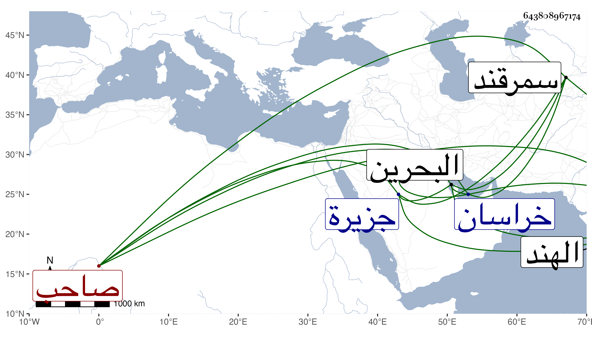

0902Sakhawi.DawLamic.ITO20230111-ara1.EIS1600.643808967174
Biography ID: 643808967174
736
مهار بن فيروز شاه بن محمد تم بن بهم تم بن جرد بن شاه بن طغلق ابن طبق شاه سيف الدين بن قطب الدين صاحب جزيرة هرمز والبحرين قتل أباه واستبد بالملك وعظم قدره وفخم أمره وصارت في أيامه هرمز بندر الدنيا يأتيها مراكب ممالك الهند والزيرك من بلاد الصين ويقصدها تجار خراسان وسمرقند وغيرها فامتلأت خزائنه وشكرت سيرته وعمرت بلاده . ذكره المقريزي في عقوده مطولا ولم يؤرخ وفاته .
